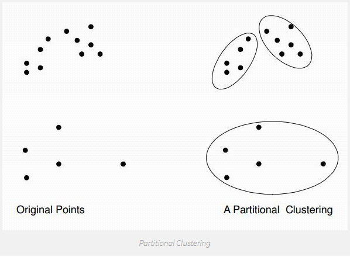
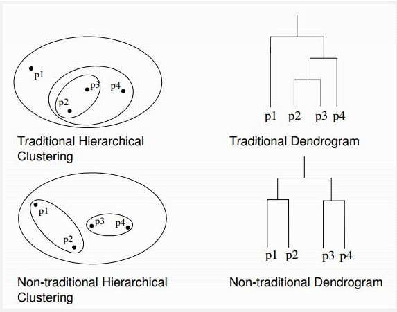
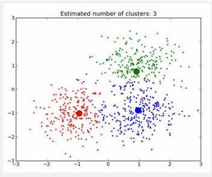
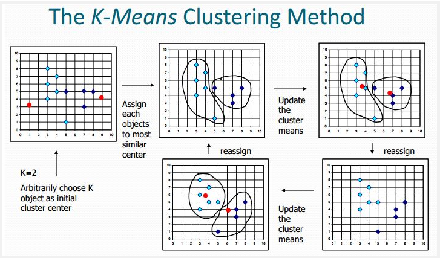
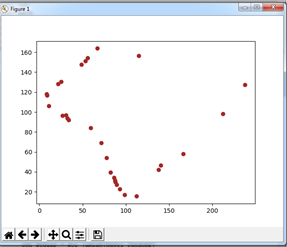
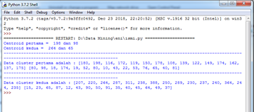

K-Means
K-Means Clustering¶
1. Definisi K-Means Clustering¶
K-Means Clustering adalah suatu metode penganalisaan data atau metode Data Mining yang melakukan proses pemodelan tanpa supervisi (unsupervised) dan merupakan salah satu metode yang melakukan pengelompokan data dengan sistem partisi.
Terdapat dua jenis data clustering yang sering dipergunakan dalam proses pengelompokan data yaitu :
Hierarchical dan Non-Hierarchical, dan K-Means merupakan salah satu metode data clustering non-hierarchical atau Partitional Clustering.

Metode K-Means Clustering berusaha mengelompokkan data yang ada ke dalam beberapa kelompok, dimana data dalam satu kelompok mempunyai karakteristik yang sama satu sama lainnya dan mempunyai karakteristik yang berbeda dengan data yang ada di dalam kelompok yang lain.

Dengan kata lain, metode K-Means Clustering bertujuan untuk meminimalisasikan objective function yang diset dalam proses clustering dengan cara meminimalkan variasi antar data yang ada di dalam suatu cluster dan memaksimalkan variasi dengan data yang ada di cluster lainnya.

Data clustering menggunakan metode K-Means Clustering ini secara umum dilakukan dengan algoritma dasar sebagai berikut:
\1. Tentukan jumlah cluster
\2. Alokasikan data ke dalam cluster secara random
\3. Hitung centroid/rata-rata dari data yang ada di masing-masing cluster
\4. Alokasikan masing-masing data ke centroid/rata-rata terdekat
\5. Kembali ke Step 3, apabila masih ada data yang berpindah cluster atau apabila perubahan nilai centroid, ada yang di atas nilai threshold yang ditentukan atau apabila perubahan nilai pada objective function yang digunakan di atas nilai threshold yang ditentukan.

2. Beberapa Permasalahan yang Terkait Dengan K-Means Clustering¶
Beberapa permasalahan yang sering muncul pada saat menggunakan metode K-Means untuk melakukan pengelompokan data adalah:
\1. Ditemukannya beberapa model clustering yang berbeda
\2. Pemilihan jumlah cluster yang paling tepat
\3. Kegagalan untuk converge
\4. Outliers
\5. Bentuk cluster
\6. Overlapping
Keenam permasalahan ini adalah beberapa hal yang perlu diperhatikan pada saat menggunakan K-Means dalam mengelompokkan data.
3. Karakteristik K-Means¶
\1. K-Means sangat cepat dalam proses clustering
\2. K-Means sangat sensitif pada pembangkitan centroid awal secara random
\3. Memungkinkan suatu cluster tidak mempunyai anggota
\4. Hasil clustering dengan K-Means bersifat tidak unik (selalu berubah-ubah) – terkadang baik, terkadang jelek
\5. K-means sangat sulit untuk mencapai global optimum
4. Kelebihan k-means¶
\1. Mudah dilakukan saat pengimpelementasian dan di jalankan.
\2. Waktu yang di butuhkan untuk melakukan pembelajaran relatif lebih cepat.
\3. Sangat fleksibel, adaptasi yang mudah untuk di lakukan
\4. Sangat umum penggunaannya.
\5. Menggunakan prinsip yang sederhana dapat di jelaskan dalam non-statistik.
5. Kekurangan dari k-means:¶
\1. Sebelum algoritma di jalankan, titik K diinisialisasikan secara random sehingga pengelompokan data yang di dapatkan bisa berbeda-beda. Namun apabila nilai yang diperoleh acak untuk penginisialisasi kurang baik maka pengelompokan yang didapatkn menjadi tidak optimal.
\2. Apabila terjebak dalam kasus yang biasanya di sebut dengan curse of dimensionality. Hal ini pun akan terjadi apabila salah satu data untuk melakukan pelatihan mempunyai dimensi yang sangat banyak, sebagai contoh; jika ada data pelatihan yang terdiri dari 2 buah atribut saja maka dimensinya ada 2 dimensi pula, namun akan berbeda jika ada 20 atribut maka akan ada 20 dimensi yang di miliki. Adapun salah satu dari cara kerja algoritma cluster ini ialah untuk mencari jarak terdekat dari antara k titik dangan titik lainnya. Apabila ingin mencari jarak untuk antar titik dari 2 dimensi hal itu masih mudah untuk di lakukan, namun bagaimana dengan 20 buah dimensi hal tersebut akan menjadi lebih sulit untuk di lakukan pencarian jarak.
\3. Apabila hanya ada terdapat beberapa buah titik sampel data yang ada, maka hal yang mudah untuk melakukan penghitungan dan mencari jarak titik terdekat dengan k titik yang telah di lakukan inisialisasi yang secara acak. Namun jika ada banyak titik data, misalkan satu juta data, maka perhitungan dan pencarian titik terdekat akan sangat membutuhkan waktu yang lama. Proses tersebut dapat dipercepat namun dibutuhkan sebuah struktur data yang lebih rumit seperti kD-tree atau hashing untuk melakukan proses tersebut.
\4. Adanya penggunaan k buah random, tidak ada jaminan untuk menemukan kumpulan cluster yang optimal.
6. Penerapan K-Means Clustering¶
Bahan yang dibutuhkan untuk pembuatan K-Means Clustering :
-
Data dengan format csv . misalnya saya disini membuat data penanaman pohon
-
Install Python.
-
Install pandas di cmd untuk membaca data dengan format csv .
pip install pandas
- Install Numpy di cmd . Numpy merupakan salah satu library yang digunakan oleh library lain seperti Scikit-Learn untuk keperluan analisis data.
pip install matplotlib
- Lalu ketikkan script berikut pada python
#mengimport library import csv import math import random import pandas as pd import numpy as np import matplotlib.pyplot as plt akar = math.sqrt #mengimport datatest def program(): dataset = pd.read_csv("data penanaman pohon.csv") # mengambil kolom 3 dan 5 kol_mandiri = dataset.iloc[:, 1].values kol_jumlah = dataset.iloc[:, 2].values def mencari_centroid_dst(): # mengambil letak centroid pertama acak random1 = [] for i in range(30): random1.append(i) hasil_random1 = random.choice(random1) # hasil centroid pertama acak cen_pertama1 = kol_mandiri[hasil_random1] cen_pertama2 = kol_jumlah[hasil_random1] # mengambil letak centroid kedua acak random2 = [] for j in range(30): random2.append(j) hasil_random2 = random.choice(random2) # hasil centroid kedua acak cen_kedua1 = kol_mandiri[hasil_random2] cen_kedua2 = kol_jumlah[hasil_random2] if (cen_pertama1==cen_kedua1 and cen_pertama2==cen_kedua2): mencari_centroid_dst() else: # menghitung distance ke centroid 1 dan centroid 2 hasil_hitung_pertama1 = [] hasil_hitung_pertama2 = [] hasil1 = [] hasil2 = [] anggota1_kiri = [] anggota1_kanan = [] anggota2_kanan = [] anggota2_kiri = [] jml_awal1 = [] jml_awal2 = [] for a in range(len(kol_mandiri)): for b in range(len(kol_jumlah)): if (a==b): jarak1 = akar(((cen_pertama1 - kol_mandiri[a])**2) + ((cen_pertama2 - kol_jumlah[a])**2)) jarak2 = akar(((cen_kedua1 - kol_mandiri[a])**2) + ((cen_kedua2 - kol_jumlah[a])**2)) if(jarak1 < jarak2): hasil1.append(jarak1) anggota1_kiri.append(kol_mandiri[a]) anggota1_kanan.append(kol_jumlah[a]) hasil_hitung_pertama1.append(jarak1) jml_awal1.append(jarak1) hasil_hitung_pertama2.append(jarak2) else: hasil2.append(jarak2) anggota2_kanan.append(kol_jumlah[a]) anggota2_kiri.append(kol_mandiri[a]) hasil_hitung_pertama2.append(jarak2) jml_awal2.append(jarak2) hasil_hitung_pertama1.append(jarak1) # menghitung rata-rata tiap kolom sebagai pusat cluster yang baru hasil1_baru = [] hasil2_baru = [] anggota_clus1 = [] anggota_clus2 = [] seluruh_kiri = [] seluruh_kanan = [] anggota1_kiribaru = [] anggota1_kananbaru = [] anggota2_kiribaru = [] anggota2_kananbaru = [] rata1_a = sum(anggota1_kiri) / len(anggota1_kiri) rata1_b = sum(anggota1_kanan) / len(anggota1_kanan) rata2_a = sum(anggota2_kiri) / len(anggota2_kiri) rata2_b = sum(anggota2_kanan) / len(anggota2_kanan) for j in range(len(kol_mandiri)): for k in range(len(kol_jumlah)): if(j==k): dist1 = akar(((rata1_a - kol_mandiri[j])**2) + ((rata1_b - kol_jumlah[j])**2)) dist2 = akar(((rata2_a - kol_mandiri[j])**2) + ((rata2_b - kol_jumlah[j])**2)) if (dist1<dist2): hasil1_baru.append(dist1) seluruh_kiri.append(dist1) seluruh_kanan.append(dist2) anggota_clus1.append(kol_mandiri[j]) anggota1_kiribaru.append(kol_mandiri[j]) anggota1_kananbaru.append(kol_jumlah[j]) else: hasil2_baru.append(dist2) seluruh_kanan.append(dist2) seluruh_kiri.append(dist1) anggota_clus2.append(kol_mandiri[j]) anggota2_kiribaru.append(kol_mandiri[j]) anggota2_kananbaru.append(kol_jumlah[j]) if (len(hasil1)==len(hasil1_baru) and len(hasil2)==len(hasil2_baru)): plt.scatter(seluruh_kiri,seluruh_kanan,c='brown') plt.show() print ("Centroid pertama = ",cen_pertama1,"dan",cen_pertama2) print ("Centroid kedua = ",cen_kedua1,"dan",cen_kedua2) print ("----------------------------------------------------------------------------------------------------------------------------------------------") print ("Data cluster pertama adalah :",anggota1_kiri,anggota1_kanan) print ("----------------------------------------------------------------------------------------------------------------------------------------------") print ("Data cluster kedua adalah :",anggota2_kiri,anggota2_kanan) else: program() mencari_centroid_dst() program()
- Lalu klik Run > Run Module dan hasilnya seperti dibawah ini. disini saya menggunakan 2 cluster yaitu menggunakan kolom pohon pelindung dan pohon produktif pada data penanaman pohon.

-
dibawah ini tampil bahwa centroid /cluster pertama berada pada data 198 dan 98 dan centroid kedua berada pada data 264 dan 65.

Referensi :
https://informatikalogi.com/algoritma-k-means-clustering/
https://garudacyber.co.id/artikel/1514-kelebihan-dan-kekurangan-k-means-clustering